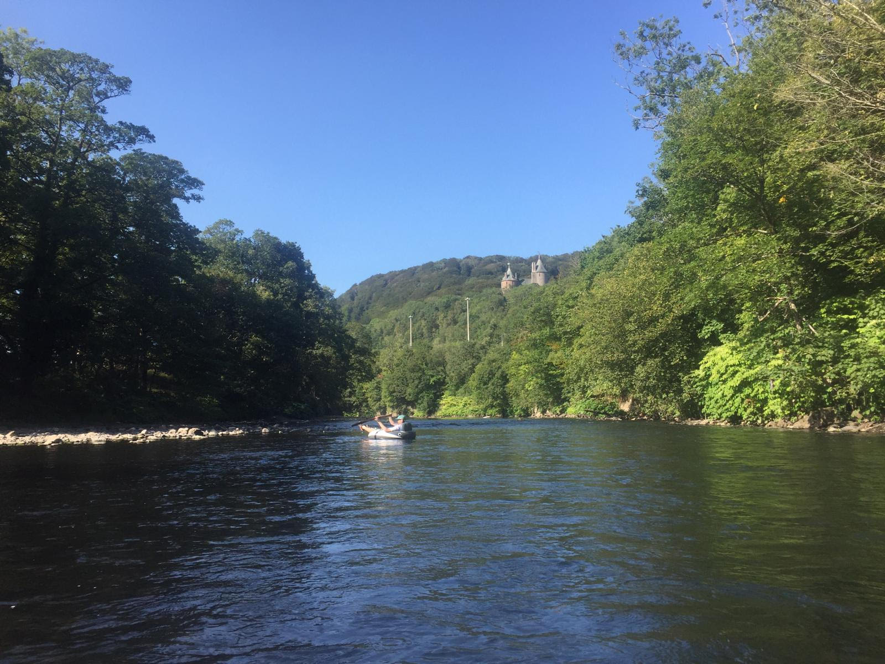
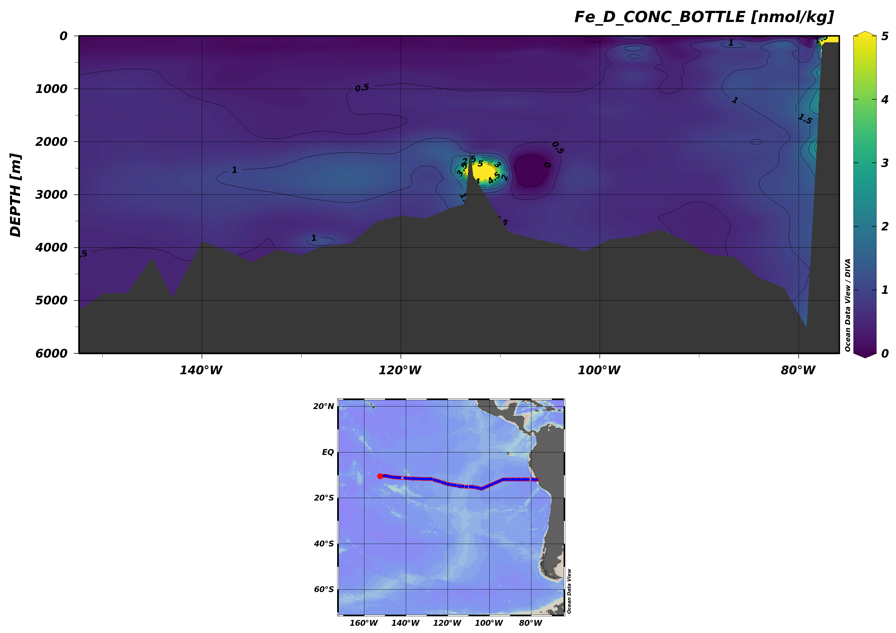
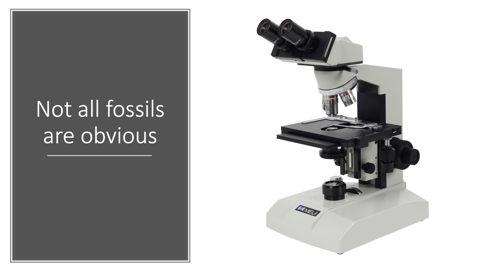
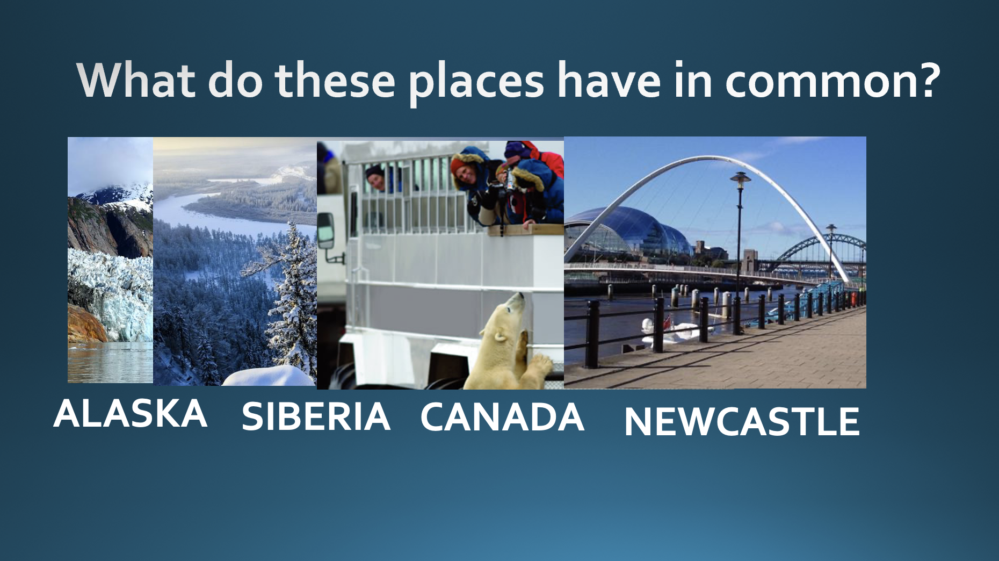
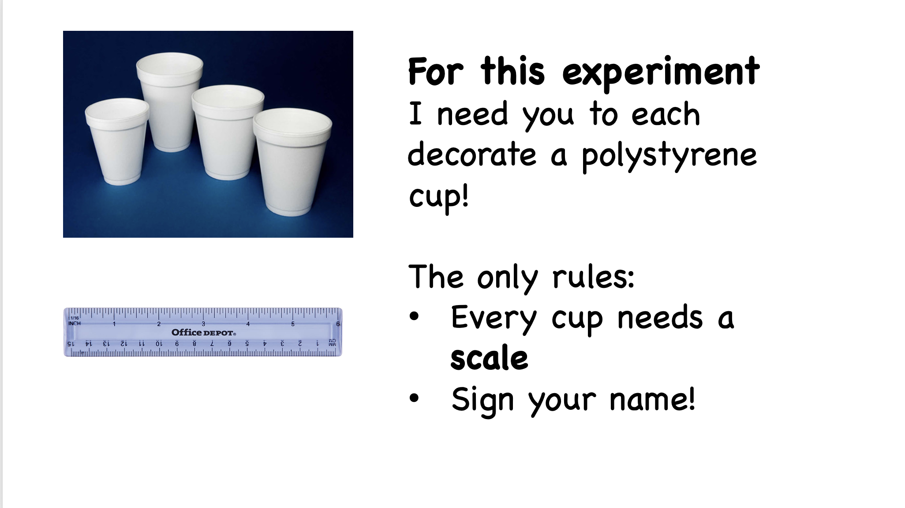

Outreach
KS2/KS3 Science Sessions
Public lecture I gave for the "GeoTalk" series at Cardiff University
Teaching
Chemistry of the Environment
Numerical Modelling in Earth and Ocean Sciences
Ocean Data View tutorials 

Some example slides from oceanography and climate science outreach sessions I've run for primary school classes.
Cardiff University Undergraduate Module
During my PhD I co-led practical sessions and led assesment/exam development for this 1st year undergraduate module. We covered basic chemistry, balancing equations, unit conversion, and introductory concepts in enviornmental chemistry.
Right: The mighty River Taff, topic of many env. chemistry practicals at Cardiff
Cardiff University Undergraduate Module
I was a "demonstrator" for practical sessions where 4th year undergraduate students worked on numerical modelling problems, including implementing a published model by themselves in Matlab.
Topics covered included logical operators and loops, Monte Carlo models, Bootstrap resampling, and forward/backward modelling using Euler, Taylor Series, Runge-Kutta methods.
Part of the Cardiff University undergraduate module "Ocean-Atmosphere System"
I developed and delivered a series of tutorial lectures and practical sessions on the use of the Ocean Data View (ODV) software package for visualising oceanographic datasets.
Topics covered including Temperature-Salinity plots, hydrographic sections, biogeochemical and nutrient cycles. I covered accessing and visualising discrete and gridded datasets from the World Ocean Atlas and GEOTRACES.
Right: Example figure from one of the practical session: dissolved Fe along the GP16 Geostraces transect (data from this paper)